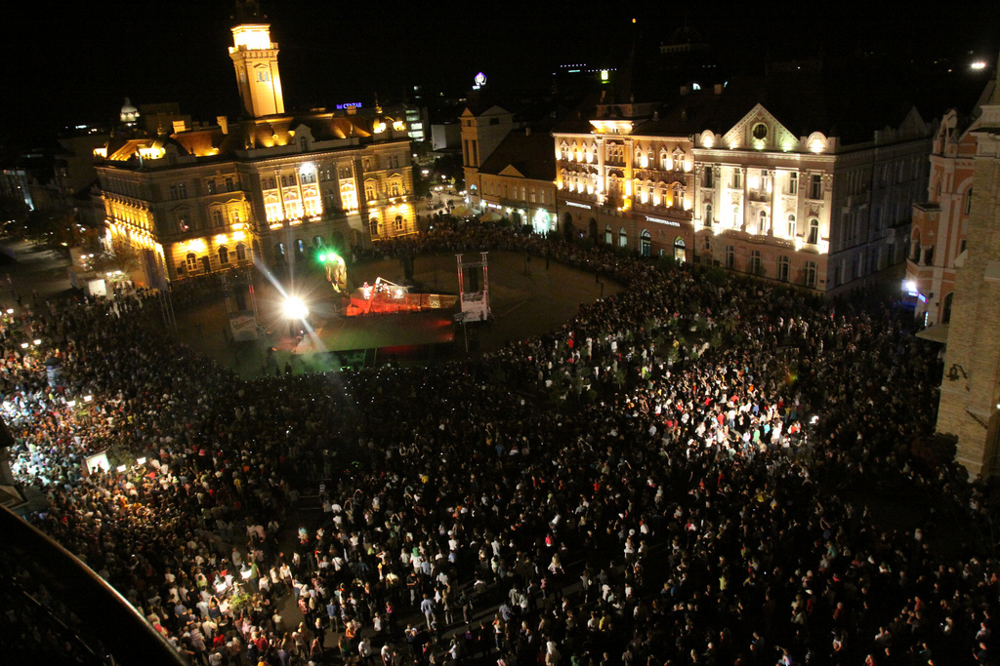

PO OBIČAJU KOJI U KONTINUITETU TRAJE OD 2000. GODINE, NOVOSAĐANE I NJIHOVE GOSTE KRAJEM LETA OBRADUJE FESTIVAL ULIČNIH SVIRAČA, KOJI NA ULICE GRADA DOVODI NAJRAZNOVRSNIJE UMETNIKE SA INTERNACIONALNE I DOMAĆE SCENE.
Na festivalu ne učestvuju samo umetnici kojima je ulično sviranje i nastupanje na trgovima stil života već i autori koji su svojim trudom i zalaganjem afirmisali svoju umetnost. Ideja da umetnike ne delimo na „ulične“ i „etablirane“ proizilazi iz uverenja da umetnost uvek pripada i ulici bez obzira na faze kroz koje prolazi. Tako je Festival uličnih svirača jedino mesto na kojem mogu da se nađu vrhunski muzičari i potpuni amater! Od početka novog milenijuma i glavni grad Vojvodine stoji na mapi redovnih godišnjih skupova ulične umetnosti, a posećuju ga svi najpoznatiji ulični svirači sveta, kao i umetnici koji nastupaju na drugim prestižnim festivalima Evrope i šire. Na taj način, oni na ovo podneblje donose kulturu i duh svojih sredina, da bi ih razmenjivali sa ovdašnjim ljubiteljima ulične umetnosti i sa drugim izvođačima.
Stari centar grada sa starinskim ulicama i trgovima, bio je kao stvoren je za tu vrstu zabave, a punktovi sa programima, naravno – u liniji sa prolaznicima, neodoljivo privlače sve generacije. Program je od samog početka podeljen na dve celine, domaću i stranu scenu. Od početka do danas, umetnički direktor festivala je Aleksandar Carić, poznato ime na međunarodnoj sceni uličnog sviranja. Ovaj rođeni Novosađanin godinama živi u Italiji i Portugaliji i aktivan je ulični svirač sa ozbiljnim stažom na festivalima ove vrste u čitavom svetu. Zahvaljujući njegovim kontaktima i kriterijumima, u Novom Sadu su proteklih godina nastupila brojna najzvučnija imena ulične scene sa svih pet kontinenata, između ostalih i Malabar, Voala, The Von Trolley Quartet, Perpetuum Jazzile, Etoiles De Essaouira, Cosmic Sausages i mnogi drugi, uz probrane domaće predstavnike.
Šarenilo programa Festivala uličnih svirača svake godine u Novi Sad dovodi i sve veći broj turista iz zemlje i inostranstva, a o vrednosti manifestacije svedoči i nagrada “Turistički cvet” koju je Turistička organizacija Srbije dodelila festivalu 2007. godine u kategoriji “Kulturno-turistička manifestacija u funkciji turizma“. Pored doprinosa razvoju turizma, Festival uličnih svirača ima snažnu ulogu u građenju identiteta Novog Sada kao i u razvoju socijalizacije i društvene kohezije. Zbog atraktivnog programa, ali i velikog zalaganja svih uključenih u organizaciju, Festival uličnih svirača svake godine godine za tri dana vidi preko 70.000 posetilaca, a svi programi su, kao i oduvek od osnivanja – besplatni. Ulaznice ne postoje jer verujemo da kultura pripada ulici i da pripada svima.